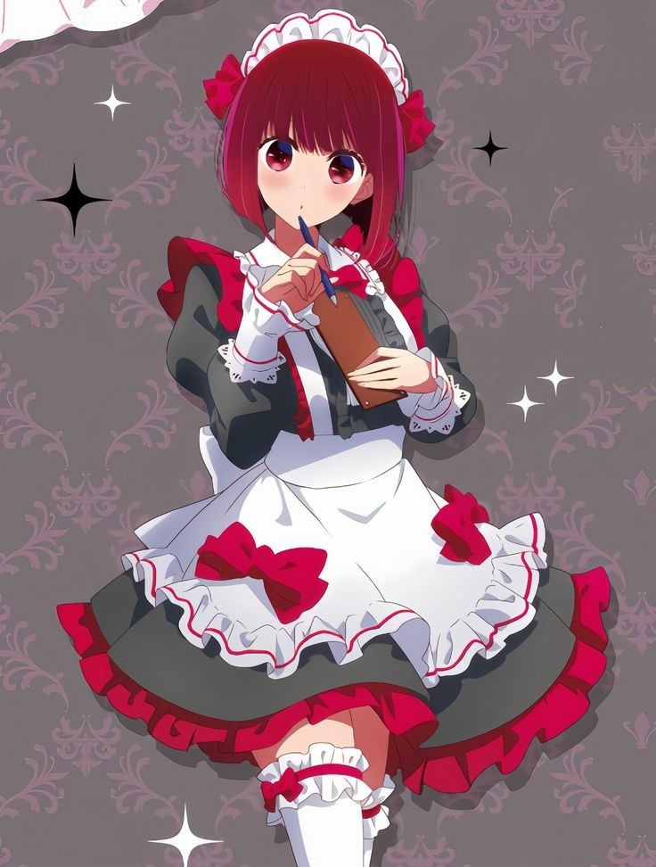

有馬佳奈
有馬佳奈(Arima Kana)（日語：有馬（ありま）かな）。是由赤坂明創作、橫槍萌果作畫的漫畫《【我推的孩子】》的登場角色。
簡介
女演員。現役偶像團體B小町的C位擔當。
童星出身，小時候被譽為「能10秒落淚的天才童星」（10秒で泣ける天才子役）因為日語發音關係也被稱作「能舔小蘇打的天才童星」（重曹を舐める天才子役）。
基本資料


本名
有馬(ありま) かな
(Arima Kana)
別號
帽皇、蘿莉學姐、舔小蘇打的天才童星
髮色
酒紅髮
瞳色
酒紅瞳
身高
150cm
萌點
妹妹頭、貝雷帽、白色及膝襪、美少女、天才、毒舌、傲嬌、演員、學姐、蘿莉體型、偶像、純情、可愛
應援色
白
經歷
從小就被看做頗具演繹才能的少女，長期處於受到追捧的環境的加奈不覺間飄飄然起來，很是自信自負。在童星時代與阿奎亞初次共演時，因為自以為傲的演技阿奎亞超越，自此對他變得十分在意。由於童星時期過分高傲，童星的人氣過去後，慢慢地便鮮有劇組邀請她參加演藝工作，童星轉型之路困難重重，佳奈漸漸淪為了過氣童星，長期接不到有分量的工作，一度沒有所屬的經紀公司。但最終憑藉著五反田導演的告誡變得稍加圓滑，得以在業界殘留下來而非淘汰掉。好不容易接到出演女主角的工作，可惜出演作品是顏控導演只為捧紅小鮮肉模特趕鴨子上架的完結漫畫改編網絡電視劇《今天甜》。與演技稀爛的模特演感情戲，已經學會配合他人的佳奈只能選擇降低自身水準來演戲。偶遇阿奎亞並得知對方也仍留在演藝圈後很是高興，向阿奎亞提出演出邀約扮演跟蹤狂。在阿奎亞的安排下，佳奈展現出原本的實力並頗受好評，佳奈從此對阿奎亞產生了好感。後在阿奎亞的說動下加入草莓娛樂，成為了新生「B小町」的初始成員。由於眼見阿奎亞在參加戀愛真人秀時，與黑川茜的關係越發親密，二人更在節目中接吻，因此一度不想和阿奎亞見面。在MEM CYO加入新生B小町後，本來對自己成為C位沒信心，後來由於露比和MEM CYO的能力不及於她，因此當上團隊C位。並被阿奎亞假扮的皮耶勇酷雞進行訓練，訓練過程中與皮耶勇酷雞聊天時發現他對自己的興趣喜好瞭如指掌，後來在夜晚的休息期間，卻碰巧發現到此時的皮耶勇酷雞正是阿奎亞本人。首次登台時，原本毫無自信，見到在台下為新生B小町應援的阿奎亞，一掃陰霾發誓自己要成為「你推的孩子」而煥發出光芒，不僅順利完成表演，收割一眾粉絲，更是解開了自卑的心結。之後得知阿奎亞和黑川茜的關係僅止於工作後而重修舊好。舞台劇篇，在與黑川茜的對手戲中見證了其演技大爆發，本想以演技回應時，回想起自己以前因為不顧及旁人感受的演技而漸漸失去他人關注的過去，眼神黯淡地選擇消除自己存在感去襯托黑川茜。 隨後在與阿奎亞的對手戲中，被阿奎亞的臨場發揮喚回精神，在他的暗示下，佳奈回憶並正視了過去並找回自信，喚起了屬於她「像耀眼的太陽」般的巨星的演技，完美演出了劍儀這個角色。升上高中三年級後，由於阿奎亞選擇和黑川茜正式交往的關係，而變得消極。某天，當阿奎亞發現殺死星野愛的幕後黑手還存在於世上後，不小心推開佳奈，導致佳奈誤以為被阿奎亞討厭。有天，在飯店接受導演的赴約，卻發生意外被記者偷拍下而即將引發緋聞事件，經過不久，由於阿奎亞向新聞記者透露和露比一家人的母親是愛後，自身的緋聞事件就沒有被爆出來。佳奈知道之後與阿奎亞和好。後來正視自己的意願發現自己還是想當演員而決定在高中畢業後放棄當偶像並離開新生B小町，重新專注在演員事業上。
其他
- 是阿奎亞和露比的學姐。身高比露比矮，被露比稱作「蘿莉學姐」，但在為人處事上比露比要成熟很多。
- 雖然在兒時唱過大火的「大青椒體操」，但是其實很討厭吃青椒。當時為了表演，拚命忍著吃下青椒，現在看見青椒就要犯蕁麻疹。
- 在訪談中被赤坂稱為重曹醬。重曹是縮寫，全稱為「重炭酸曹達」(じゅうたんさん ソーダ)，也就是小蘇打。
- 是橫槍萌果的親女兒，萌果曾表示自己很喜歡加奈。
- 橫槍老師說，這是他漫畫家生涯畫出最佳的一格(下圖中上格的佳奈)
- 能舔小蘇打的天才童星
劇中歌
- 青椒體操
- Full moon...! "
- STAR☆T☆RAIN